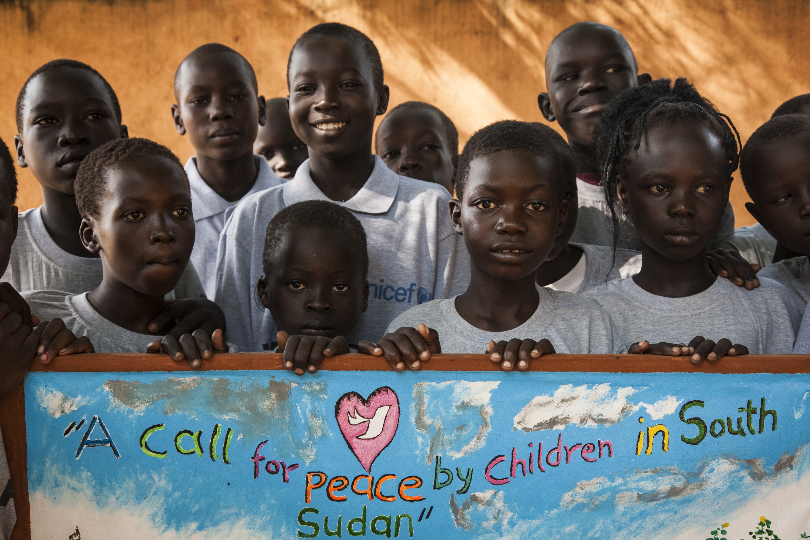

We created this website with one thing in mind: Helping you to help the world! Charities are in need of volunteers and we can help you find them! By taking our survey we can connect you to charities that you love and are destined to become your forever family. Our hopes are to help charities to expand and help more people to get involved in changing our world for the better.
The charities we have to offer connections to are:
Wounded Warrior Project-
The Wounded Warrior projects mission is to honor and empower Wounded Warriors.
Their purpose is to raise awareness about and encourage the public to aid veterans and injured soldiers. Wounded Warrior Project provides free programs and services focused on the physical, mental, and long-term financial well-being of this generation of injured veterans, their families and caregivers.
UNICEF-
UNICEF is the United Nations International Children's Emergency Fund. This charity is dedicated to standing up for the rights of children across the world. In the past UNICEF has given critical aid to the children living in the aftermath of World War 2, fought the Ebola virus, distributed supplies including vaccines to impoverished areas, and so much more.
UNICEF works for a world in which every child has a fair chance in life.
American Red Cross-
The American Red Cross is a charity whose purpose is to provide relief and aid to people affected by natural disasters. Their vision is for everyone that is affected by a disaster to be provided with shelter and hope.They believe preparation is key to help these people.
The American Red Cross prevents and alleviates human suffering in the face of emergencies by mobilizing the power of volunteers and the generosity of donors.
The thirst project-
The goal that the Thirst Project strives to achieve is a world in which young people are knowledgeable of the water crisis and work together to end it. According to the Thirst Project, every 19 seconds, a child dies from a water related disease. By providing safe drinking water, disease rates can drop to just 88%, practically overnight. To end this problem, the Thirst Project has traveled to many places around the world including India, Swaziland, Uganda, and 10 other countries. They build freshwater pumps and teach communities about hygiene and water safety to make sure they have clean water close by. Together, this generation, everyone alive today WILL be the ones to end this. WE will be the ones to push the water crisis into the history books. We invite you to learn more here and join us.
The American Cancer Society-
The American Cancer Society is an organization that is dedicated to the fight against cancer. More than one million people in the Unites States get cancer each year. The American Cancer society supports cancer patients and gives them hope. They help patients find treatment as well as assist them with their financial needs. The American Cancer Society also does research on finding treatments to battle cancer. For more than 65 years, the American Cancer Society has been finding answers that save lives - from changes in lifestyle to new approaches in therapies to improving cancer patients' quality-of-life. In fact, no single nongovernmental, not-for-profit organization in the US has invested more to find the causes and cures of cancer.
